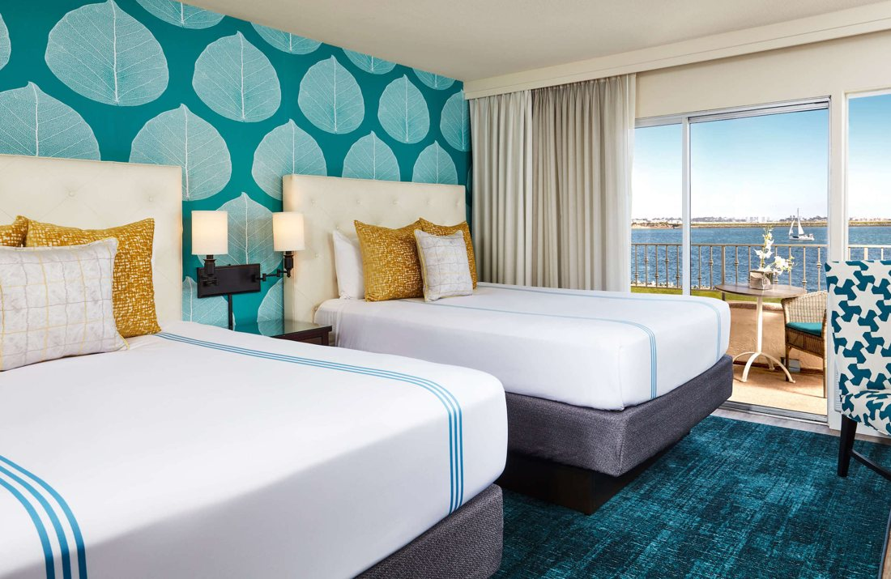

1. Kona Kai San Diego
Best overall for a resort stay
Choose this if the hotel is part of the holiday: pool time, marina walks and a quieter Shelter Island setting.

Pros
- Bayview Two Queen room sleeps four; the quoted room category was checked.
- Family Tiki pool, marina walks and optional paid bonfires offer things to do between outings.
Cons
- The sandy beach has no water access: it is not a swimming beach. The second pool is adults-only.
- Farther south than the other choices, with longer park drives and overnight parking costs.
San Diego Zoo: 20–30 minutes by car.
LEGOLAND: 50–75 minutes by car.
Parking and car: Chase listed parking at $54.88 per night (about $165 for three nights). Compare the direct parking package before choosing a rate.
Chase displayed $1,610; a conditional $250 Edit statement credit would make that $1,360 before extra charges. The matching direct quote was $1,247.59, including taxes and resort fees; a direct parking package was $1,406.95.
After that conditional credit, Edit is still about $112 above the direct room rate. It adds daily breakfast for two and one $100 restricted property credit per stay, subject to terms. The fee wording conflicts ($60/night in Chase property text versus $48 direct) despite an all-in Chase headline. Do not automatically add it twice. Cancellation also differs: Chase November 9 midnight versus a general 72-hour policy and direct November 8 at 3 p.m. Confirm the final checkout terms.